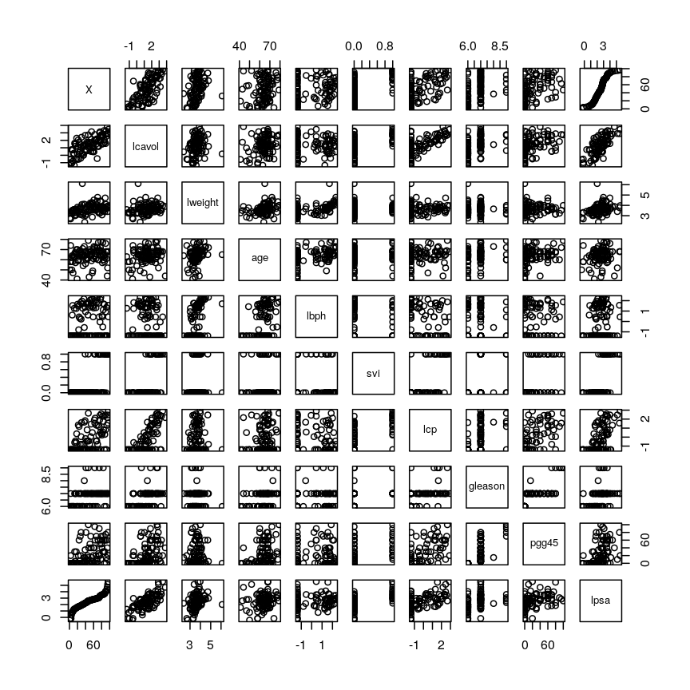

Introduction to high-dimensional data
Overview
Teaching: 20 min
Exercises: 20 minQuestions
What are high-dimensional data and what do these data look like in the biosciences?
What are the challenges when analysing high-dimensional data?
What statistical methods are suitable for analysing these data?
How can Bioconductor be used to access high-dimensional data in the biosciences?
Objectives
Explore examples of high-dimensional data in the biosciences.
Appreciate challenges involved in analysing high-dimensional data.
Explore different statistical methods used for analysing high-dimensional data.
Work with example data created from biological studies.
What are high-dimensional data?
High-dimensional data are defined as data in which the number of features (variables observed), $p$, are close to or larger than the number of observations (or data points), $n$. The opposite is low-dimensional data in which the number of observations, $n$, far outnumbers the number of features, $p$. A related concept is wide data, which refers to data with numerous features irrespective of the number of observations (similarly, tall data is often used to denote data with a large number of observations). Analyses of high-dimensional data require consideration of potential problems that come from having more features than observations.
High-dimensional data have become more common in many scientific fields as new automated data collection techniques have been developed. More and more datasets have a large number of features and some have as many features as there are rows in the dataset. Datasets in which $p \geq n$ are becoming more common. Such datasets pose a challenge for data analysis as standard methods of analysis, such as linear regression, are no longer appropriate.
High-dimensional datasets are common in the biological sciences. Data sets in subjects like genomics and medical sciences are often tall (with large $n$) and wide (with large $p$), and can be difficult to analyse or visualise using standard statistical tools. An example of high-dimensional data in biological sciences may include data collected from hospital patients recording symptoms, blood test results, behaviours, and general health, resulting in datasets with large numbers of features. Researchers often want to relate these features to specific patient outcomes (e.g. survival, length of time spent in hospital). An example of what high-dimensional data might look like in a biomedical study is shown in the figure below.
plot of chunk table-intro
Challenge 1
Descriptions of three research questions and their datasets are given below. Which of these scenarios use high-dimensional data?
- Predicting patient blood pressure using: cholesterol level in blood, age, and BMI measurements, collected from 100 patients.
- Predicting patient blood pressure using: cholesterol level in blood, age, and BMI, as well as information on 200,000 single nucleotide polymorphisms from 100 patients.
- Predicting the length of time patients spend in hospital with pneumonia infection using: measurements on age, BMI, length of time with symptoms, number of symptoms, and percentage of neutrophils in blood, using data from 200 patients.
- Predicting probability of a patient’s cancer progressing using gene expression data from 20,000 genes, as well as data associated with general patient health (age, weight, BMI, blood pressure) and cancer growth (tumour size, localised spread, blood test results).
Solution
- No. The number of observations (100 patients) is far greater than the number of features (3).
- Yes, this is an example of high-dimensional data. There are only 100 observations but 200,000+3 features.
- No. There are many more observations (200 patients) than features (5).
- Yes. There is only one observation of more than 20,000 features.
Now that we have an idea of what high-dimensional data look like we can think about the challenges we face in analysing them.
Challenges in dealing with high-dimensional data
Most classical statistical methods are set up for use on low-dimensional data (i.e. data where the number of observations $n$ is much larger than the number of features $p$). This is because low-dimensional data were much more common in the past when data collection was more difficult and time consuming. In recent years advances in information technology have allowed large amounts of data to be collected and stored with relative ease. This has allowed large numbers of features to be collected, meaning that datasets in which $p$ matches or exceeds $n$ are common (collecting observations is often more difficult or expensive than collecting many features from a single observation).
Datasets with large numbers of features are difficult to visualise. When exploring low-dimensional datasets, it is possible to plot the response variable against each of the limited number of explanatory variables to get an idea which of these are important predictors of the response. With high-dimensional data the large number of explanatory variables makes doing this difficult. In some high-dimensional datasets it can also be difficult to identify a single response variable, making standard data exploration and analysis techniques less useful.
Let’s have a look at a simple dataset with lots of features to understand some of the challenges we are facing when working with high-dimensional data.
Challenge 2
Load the
Prostatedataset as follows:library("here") Prostate <- readRDS(here("data/prostate.rds"))Although technically not a high-dimensional dataset, the
Prostatedata will allow us explore the problems encountered when working with many features.Examine the dataset (in which each row represents a single patient) to:
- Determine how many observations ($n$) and features ($p$) are available (hint: see the
dim()function).- Examine what variables were measured (hint: see the
names()andhead()functions).- Plot the relationship between the variables (hint: see the
pairs()function).Solution
dim(Prostate) #print the number of rows and columnsnames(Prostate) # examine the variable names head(Prostate) #print the first 6 rowsnames(Prostate) #examine column names[1] "X" "lcavol" "lweight" "age" "lbph" "svi" "lcp" [8] "gleason" "pgg45" "lpsa"pairs(Prostate) #plot each pair of variables against each otherplot of chunk pairs-prostate
The
pairs()function plots relationships between each of the variables in theProstatedataset. This is possible for datasets with smaller numbers of variables, but for datasets in which $p$ is larger it becomes difficult (and time consuming) to visualise relationships between all variables in the dataset. Even where visualisation is possible, fitting models to datasets with many variables is difficult due to the potential for overfitting and difficulties in identifying a response variable.
Locating data with R - the
herepackageIt is often desirable to access external datasets from inside R and to write code that does this reliably on different computers. While R has an inbulit function
setwd()that can be used to denote where external datasets are stored, this usually requires the user to adjust the code to their specific system and folder structure. Theherepackage is meant to be used in R projects. It allows users to specify the data location relative to the R project directory. This makes R code more portable and can contribute to improve the reproducibility of an analysis.
Imagine we are carrying out least squares regression on a dataset with 25 observations. Fitting a best fit line through these data produces a plot shown in the left-hand panel of the figure below.
However, imagine a situation in which the number of observations and features in a dataset are almost equal. In that situation the effective number of observations per features is low. The result of fitting a best fit line through few observations can be seen in the right-hand panel below.

plot of chunk intro-figure
In the first situation, the least squares regression line does not fit the data perfectly and there is some error around the regression line. But, when there are only two observations the regression line will fit through the points exactly, resulting in overfitting of the data. This suggests that carrying out least squares regression on a dataset with few data points per feature would result in difficulties in applying the resulting model to further datsets. This is a common problem when using regression on high-dimensional datasets.
Another problem in carrying out regression on high-dimensional data is dealing with correlations between explanatory variables. The large numbers of features in these datasets makes high correlations between variables more likely.
Challenge 3
Use the
cor()function to examine correlations between all variables in theProstatedataset. Are some pairs of variables highly correlated (i.e. correlation coefficients > 0.6)?Use the
lm()function to fit univariate regression models to predict patient age using two variables that are highly correlated as predictors. Which of these variables are statistically significant predictors of age? Hint: thesummary()function can help here.Fit a multiple linear regression model predicting patient age using both variables. What happened?
Solution
Create a correlation matrix of all variables in the Prostate dataset
cor(Prostate)X lcavol lweight age lbph svi X 1.0000000 0.7111363 0.350443662 0.1965557 0.167928486 0.56678035 lcavol 0.7111363 1.0000000 0.194128286 0.2249999 0.027349703 0.53884500 lweight 0.3504437 0.1941283 1.000000000 0.3075286 0.434934636 0.10877851 age 0.1965557 0.2249999 0.307528614 1.0000000 0.350185896 0.11765804 lbph 0.1679285 0.0273497 0.434934636 0.3501859 1.000000000 -0.08584324 svi 0.5667803 0.5388450 0.108778505 0.1176580 -0.085843238 1.00000000 lcp 0.5336960 0.6753105 0.100237795 0.1276678 -0.006999431 0.67311118 gleason 0.3936079 0.4324171 -0.001275658 0.2688916 0.077820447 0.32041222 pgg45 0.4497267 0.4336522 0.050846821 0.2761124 0.078460018 0.45764762 lpsa 0.9581149 0.7344603 0.354120390 0.1695928 0.179809410 0.56621822 lcp gleason pgg45 lpsa X 0.533696039 0.393607939 0.44972672 0.9581149 lcavol 0.675310484 0.432417056 0.43365225 0.7344603 lweight 0.100237795 -0.001275658 0.05084682 0.3541204 age 0.127667752 0.268891599 0.27611245 0.1695928 lbph -0.006999431 0.077820447 0.07846002 0.1798094 svi 0.673111185 0.320412221 0.45764762 0.5662182 lcp 1.000000000 0.514830063 0.63152825 0.5488132 gleason 0.514830063 1.000000000 0.75190451 0.3689868 pgg45 0.631528245 0.751904512 1.00000000 0.4223159 lpsa 0.548813169 0.368986803 0.42231586 1.0000000round(cor(Prostate), 2) # rounding helps to visualise the correlationsX lcavol lweight age lbph svi lcp gleason pgg45 lpsa X 1.00 0.71 0.35 0.20 0.17 0.57 0.53 0.39 0.45 0.96 lcavol 0.71 1.00 0.19 0.22 0.03 0.54 0.68 0.43 0.43 0.73 lweight 0.35 0.19 1.00 0.31 0.43 0.11 0.10 0.00 0.05 0.35 age 0.20 0.22 0.31 1.00 0.35 0.12 0.13 0.27 0.28 0.17 lbph 0.17 0.03 0.43 0.35 1.00 -0.09 -0.01 0.08 0.08 0.18 svi 0.57 0.54 0.11 0.12 -0.09 1.00 0.67 0.32 0.46 0.57 lcp 0.53 0.68 0.10 0.13 -0.01 0.67 1.00 0.51 0.63 0.55 gleason 0.39 0.43 0.00 0.27 0.08 0.32 0.51 1.00 0.75 0.37 pgg45 0.45 0.43 0.05 0.28 0.08 0.46 0.63 0.75 1.00 0.42 lpsa 0.96 0.73 0.35 0.17 0.18 0.57 0.55 0.37 0.42 1.00As seen above, some variables are highly correlated. In particular, the correlation between
gleasonandpgg45is equal to 0.75.Fitting univariate regression models to predict age using gleason and pgg45 as predictors.
model1 <- lm(age ~ gleason, data = Prostate) model2 <- lm(age ~ pgg45, data = Prostate)Check which covariates have a significant efffect
summary(model1)Call: lm(formula = age ~ gleason, data = Prostate) Residuals: Min 1Q Median 3Q Max -20.780 -3.552 1.448 4.220 13.448 Coefficients: Estimate Std. Error t value Pr(>|t|) (Intercept) 45.146 6.918 6.525 3.29e-09 *** gleason 2.772 1.019 2.721 0.00774 ** --- Signif. codes: 0 '***' 0.001 '**' 0.01 '*' 0.05 '.' 0.1 ' ' 1 Residual standard error: 7.209 on 95 degrees of freedom Multiple R-squared: 0.0723, Adjusted R-squared: 0.06254 F-statistic: 7.404 on 1 and 95 DF, p-value: 0.007741summary(model2)Call: lm(formula = age ~ pgg45, data = Prostate) Residuals: Min 1Q Median 3Q Max -21.0889 -3.4533 0.9111 4.4534 15.1822 Coefficients: Estimate Std. Error t value Pr(>|t|) (Intercept) 62.08890 0.96758 64.17 < 2e-16 *** pgg45 0.07289 0.02603 2.80 0.00619 ** --- Signif. codes: 0 '***' 0.001 '**' 0.01 '*' 0.05 '.' 0.1 ' ' 1 Residual standard error: 7.193 on 95 degrees of freedom Multiple R-squared: 0.07624, Adjusted R-squared: 0.06651 F-statistic: 7.84 on 1 and 95 DF, p-value: 0.006189Based on these results we conclude that both
gleasonandpgg45have a statistically significan univariate effect (also referred to as a marginal effect) as predictors of age (5% significance level).Fitting a multivariate regression model using both both
gleasonandpgg45as predictorsmodel3 <- lm(age ~ gleason + pgg45, data = Prostate) summary(model3)Call: lm(formula = age ~ gleason + pgg45, data = Prostate) Residuals: Min 1Q Median 3Q Max -20.927 -3.677 1.323 4.323 14.420 Coefficients: Estimate Std. Error t value Pr(>|t|) (Intercept) 52.95548 9.74316 5.435 4.3e-07 *** gleason 1.45363 1.54299 0.942 0.349 pgg45 0.04490 0.03951 1.137 0.259 --- Signif. codes: 0 '***' 0.001 '**' 0.01 '*' 0.05 '.' 0.1 ' ' 1 Residual standard error: 7.198 on 94 degrees of freedom Multiple R-squared: 0.08488, Adjusted R-squared: 0.06541 F-statistic: 4.359 on 2 and 94 DF, p-value: 0.01547Although
gleasonandpgg45have statistically significant univariate effects, this is no longer the case when both variables are simultaneously included as covariates in a multivariate regression model.
Including highly correlated variables such as gleason and pgg45
simultaneously the same regression model can lead to problems
in fitting a regression model and interpreting its output. To allow variables to
be included in the same model despite high levels of correlation, we can use
dimensionality reduction methods to collapse multiple variables into a single
new variable (we will explore this dataset further in the dimensionality
reduction lesson). We can also use modifications to linear regression like
regularisation, which we will discuss in the lesson on high-dimensional
regression.
What statistical methods are used to analyse high-dimensional data?
As we found out in the above challenges, carrying out linear regression on datasets with large numbers of features can be difficult due to: high levels of correlation between variables; difficulty in identifying a clear response variable; and risk of overfitting. These problems are common to the analysis of many high-dimensional datasets, for example, those using genomics data with multiple genes, or species composition data in an environment where the relative abundance of different species within a community is of interest. For such datasets, other statistical methods may be used to examine whether groups of observations show similar characteristics and whether these groups may relate to other features in the data (e.g. phenotype in genetics data).
In this course, we will cover four methods that help in dealing with high-dimensional data: (1) regression with numerous outcome variables, (2) regularised regression, (3) dimensionality reduction, and (4) clustering. Here are some examples of when each of these approaches may be used:
(1) Regression with numerous outcomes refers to situations in which there are many variables of a similar kind (expression values for many genes, methylation levels for many sites in the genome) and when one is interested in assessing whether these variables are associated with a specific covariate of interest, such as experimental condition or age. In this case, multiple univariate regression models (one per each outcome, using the covariate of interest as predictor) could be fitted independently. In the context of high-dimensional molecular data, a typical example are differential gene expression analyses. We will explore this type of analysis in the Regression with many outcomes episode.
(2) Regularisation (also known as regularised regression or penalised regression) is typically used to fit regression models when there is a single outcome variable or interest but the number of potential predictors is large, e.g. there are more predictors than observations. Regularisation can help to prevent over-fitting and may be used to identify a small subset of predictors that are associated with the outcome of interest. For example, regularised regression has been often used when building epigenetic clocks, where methylation values across several thousands of genomic sites are used to predict chronological age. We will explore this in more detail in the Regularised regression episode.
(3) Dimensionality reduction is commonly used on high-dimensional datasets for data exploration or as a preprocessing step prior to other downstream analyses. For instance, a low-dimensional visualisation of a gene expression dataset may be used to inform quality control steps (e.g. are there any anomalous samples?). This course contains two episodes that explore dimensionality reduction techniques: Principal component analysis and Factor analysis.
(4) Clustering methods can be used to identify potential grouping patterns within a dataset. A popular example is the identification of distinct cell types through clustering cells with similar gene expression patterns. The K-means episode will explore a specific method to perform clustering analysis.
Using Bioconductor to access high-dimensional data in the biosciences
In this workshop, we will look at statistical methods that can be used to visualise and analyse high-dimensional biological data using packages available from Bioconductor, open source software for analysing high throughput genomic data. Bioconductor contains useful packages and example datasets as shown on the website https://www.bioconductor.org/.
Bioconductor packages can be installed and used in
Rusing theBiocManagerpackage. Let’s load theminfipackage from Bioconductor (a package for analysing Illumina Infinium DNA methylation arrays).library("minfi")browseVignettes("minfi")We can explore these packages by browsing the vignettes provided in Bioconductor. Bioconductor has various packages that can be used to load and examine datasets in
Rthat have been made available in Bioconductor, usually along with an associated paper or package.Next, we load the
methylationdataset which represents data collected using Illumina Infinium methylation arrays which are used to examine methylation across the human genome. These data include information collected from the assay as well as associated metadata from individuals from whom samples were taken.library("here") library("ComplexHeatmap") methylation <- readRDS(here("data/methylation.rds")) head(colData(methylation))DataFrame with 6 rows and 14 columns Sample_Well Sample_Name purity Sex Age <character> <character> <integer> <character> <integer> 201868500150_R01C01 A07 PCA0612 94 M 39 201868500150_R03C01 C07 NKpan2510 95 M 49 201868500150_R05C01 E07 WB1148 95 M 20 201868500150_R07C01 G07 B0044 97 M 49 201868500150_R08C01 H07 NKpan1869 95 F 33 201868590193_R02C01 B03 NKpan1850 93 F 21 weight_kg height_m bmi bmi_clas Ethnicity_wide <numeric> <numeric> <numeric> <character> <character> 201868500150_R01C01 88.4505 1.8542 25.7269 Overweight Mixed 201868500150_R03C01 81.1930 1.6764 28.8911 Overweight Indo-European 201868500150_R05C01 80.2858 1.7526 26.1381 Overweight Indo-European 201868500150_R07C01 82.5538 1.7272 27.6727 Overweight Indo-European 201868500150_R08C01 87.5433 1.7272 29.3452 Overweight Indo-European 201868590193_R02C01 87.5433 1.6764 31.1507 Obese Mixed Ethnic_self smoker Array Slide <character> <character> <character> <numeric> 201868500150_R01C01 Hispanic No R01C01 2.01869e+11 201868500150_R03C01 Caucasian No R03C01 2.01869e+11 201868500150_R05C01 Persian No R05C01 2.01869e+11 201868500150_R07C01 Caucasian No R07C01 2.01869e+11 201868500150_R08C01 Caucasian No R08C01 2.01869e+11 201868590193_R02C01 Finnish/Creole No R02C01 2.01869e+11methyl_mat <- t(assay(methylation)) ## calculate correlations between cells in matrix cor_mat <- cor(methyl_mat)cor_mat[1:10, 1:10] # print the top-left corner of the correlation matrixThe
assay()function creates a matrix-like object where rows represent probes for genes and columns represent samples. We calculate correlations between features in themethylationdataset and examine the first 100 cells of this matrix. The size of the dataset makes it difficult to examine in full, a common challenge in analysing high-dimensional genomics data.
Further reading
- Buhlman, P. & van de Geer, S. (2011) Statistics for High-Dimensional Data. Springer, London.
- Buhlman, P., Kalisch, M. & Meier, L. (2014) High-dimensional statistics with a view toward applications in biology. Annual Review of Statistics and Its Application.
- Johnstone, I.M. & Titterington, D.M. (2009) Statistical challenges of high-dimensional data. Philosophical Transactions of the Royal Society A 367:4237-4253.
- Bioconductor ethylation array analysis vignette.
- The Introduction to Machine Learning with Python course covers additional methods that could be used to analyse high-dimensional data. See Introduction to machine learning, Tree models and Neural networks. Some related (an important!) content is also available in Responsible machine learning.
Other resources suggested by former students
- Josh Starmer’s youtube channel.
Key Points
High-dimensional data are data in which the number of features, $p$, are close to or larger than the number of observations, $n$.
These data are becoming more common in the biological sciences due to increases in data storage capabilities and computing power.
Standard statistical methods, such as linear regression, run into difficulties when analysing high-dimensional data.
In this workshop, we will explore statistical methods used for analysing high-dimensional data using datasets available on Bioconductor.